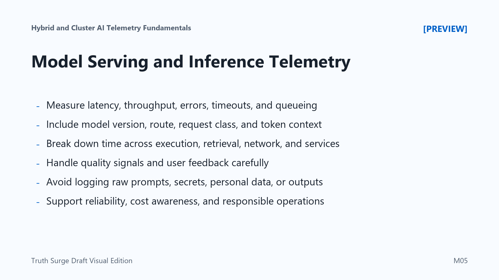

Model Serving and Inference Telemetry
Connecting to LMS... Progress: in progress

Narration
Model-serving telemetry focuses on the online path where users, applications, or automated jobs request AI behavior. That path needs familiar service signals: latency, throughput, error rates, timeout rates, queueing, concurrency, retries, and fallback behavior. These signals show whether the service is meeting reliability and user experience expectations.
AI-specific metadata adds necessary context. Teams often need model name, model version, route, deployment environment, request class, response size, token counts, safety policy result, cache behavior, and whether a fallback model or route was used. This context helps compare behavior across model rollouts, traffic classes, and environments without treating every request as identical.
Good inference telemetry helps teams locate where time is spent. A slow response may come from request admission, queue delay, model execution, retrieval, downstream services, network transfer, or response post-processing. Without that breakdown, teams may tune the wrong layer or blame the model for a bottleneck that belongs to storage, orchestration, or an external dependency.
Quality signals require care. User feedback, evaluation results, labels, content categories, and response metadata can be operationally useful, but they may also be sensitive. Operational telemetry should avoid logging raw prompts, secrets, personal data, or sensitive outputs unless a deliberate governed process requires it. Inference telemetry is strongest when it supports reliability, cost awareness, user experience, and responsible operations without casually expanding data exposure.